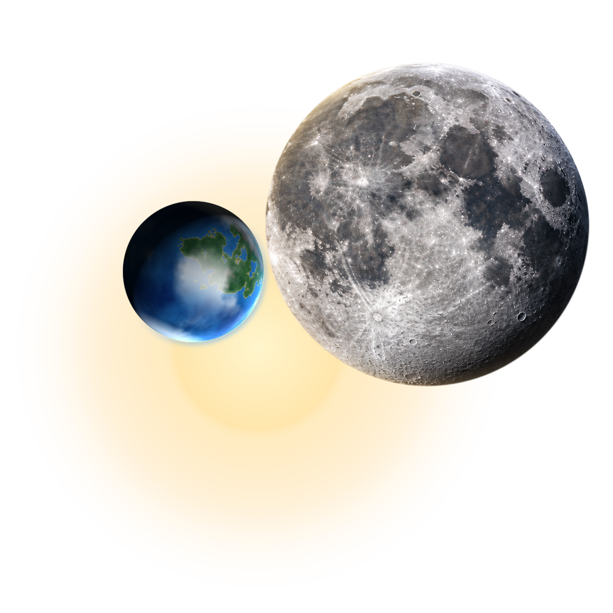

Весы
Цвет дня
Остановись на мгновение. Прислушайся к себе.
И узнай, что приготовил для тебя новый день.
Полные тексты из авторской коллекции. Вся информация носит ознакомительный и развлекательный характер.
Мои сохранённые прогнозы ↗
Пусть это будет твоей тихой опорой.
Сохраняется только в этом браузере. Синхронизация между устройствами пока не подключена.
Иногда самое интересное приходит во сне.
Найди свой образ в соннике Густава Миллера.
Русские краткие пересказы избранных статей; полный оригинал — на английском. Исторические толкования, а не предсказания событий. Источник ↗
Два знака. Две стихии. Одна маленькая подсказка
о том, как услышать друг друга.
Один Eos на компьютере, iPhone и Android.
Все прогнозы, календарь и сонник — уже здесь.
Добавь этот сайт на главный экран телефона.